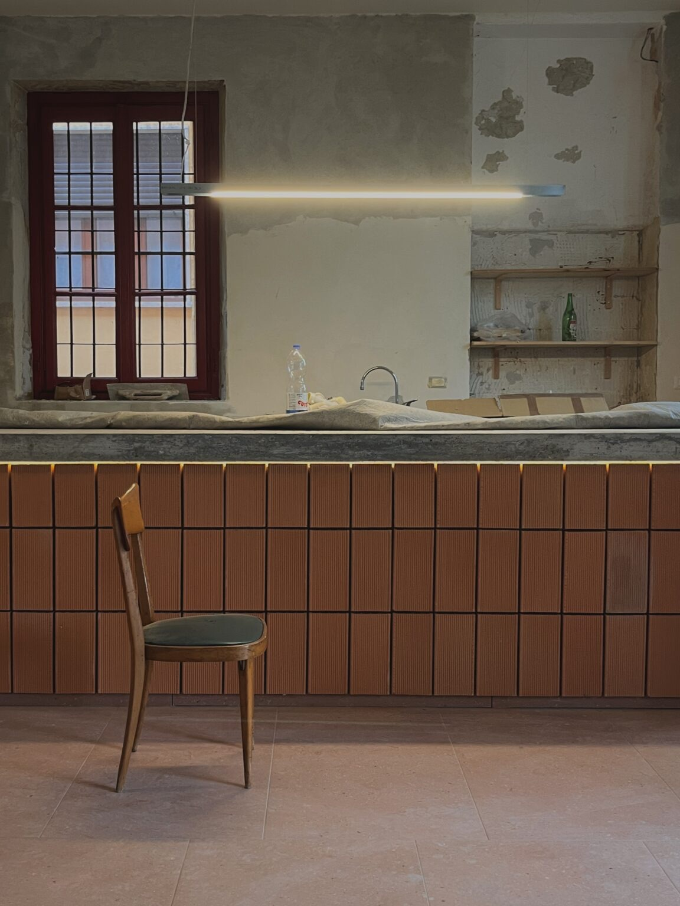

Opificio culturale
- Location
- Cesate
- Year
- 2025 – 2026
- In collaboration with
- Arch. Giuseppe Brollo
The spaces of the project belong to the Società Cooperativa di Cesate, whose roots go back to 1910. They originally housed the theatre foyer, later turned into the Mignon cinema, together with the kitchen rooms. Over the years the rooms had been gradually divided and given over to different uses: partly a bakery, partly offices.
The project comes from the wish to give these spaces back their unity, recovering their continuity and restoring their collective vocation.
One of the walls was deliberately left bare, keeping the traces of glue from the old tiles. An imperfect trace of the past, which becomes a visible memory of the changes the place has gone through.
At the centre of the main hall stands the counter, a direct visual quotation of Leonardo da Vinci’s Last Supper. Depending on the occasion it becomes a bar counter, a table for discussion or a work surface. A multi-purpose element that, besides organising the space, is its true focus: a place around which to meet, work and share ideas.
